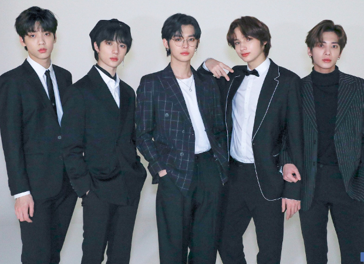

Like
투마로우바이투게더

투모로우바이투게더(TOMORROW X TOGETHER)는 빅히트 엔터테인먼트 소속 5인조 다국적 보이그룹이다. 약칭은 TXT이다. 서로 다른 너와 내가 만나 하나의 꿈으로 모여 함께 내일을 만들어 간다는 뜻으로, 하나의 꿈과 목표를 가진 소년들이 서로 시너지를 발휘하는 밝고 건강한 이미지를 가진다.
스누피
스누피는 충실하고 순수하며, 마음씨 좋고 상상력이 풍부한 강아지다. 또 스스로 한 인물을 상상해 그것을 흉내내기를 좋아하는데, 이를테면 대학생 '조 쿨' (Joe Cool)이 된다거나, 1차 세계 대전의 영국 공군 에이스가 되어 전투비행에 나선다는 식이다. 특히 조종사 흉내를 낼 때는 헬멧과 고글을 쓰고 스카프를 단 뒤 군인용 지팡이를 짚고 다니는데, 이 모습이 가장 널리 알려진 상상 속 모습일 것이다.